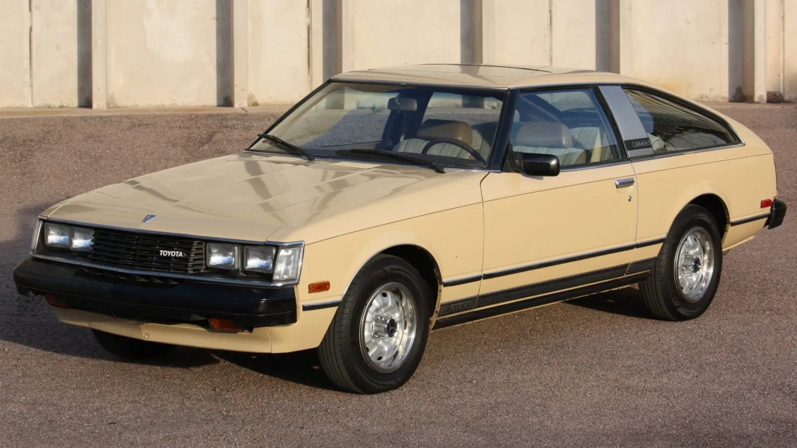
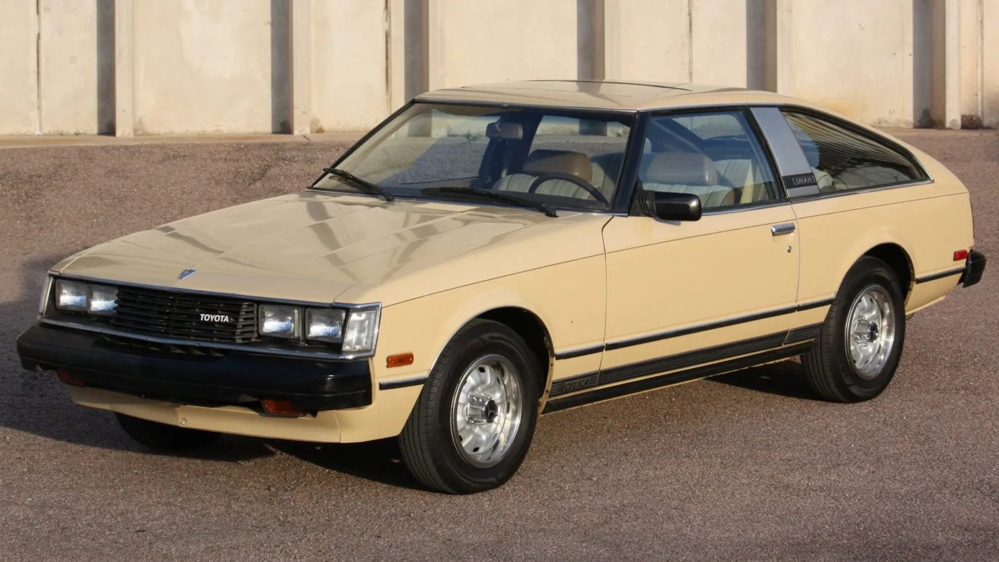

Our Story
The Toyota Celica is an automobile produced by Toyota from 1970 until 2006. The Celica name derives from the Latin word coelica meaning heavenly or celestial. In Japan, the Celica was exclusive to the Toyota Corolla Store dealer chain. Produced across seven generations, the Celica was powered by various four-cylinder engines, and bodystyles included convertibles, liftbacks, coupés and notchback coupés.
 
